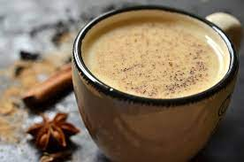

Masala Chai

Description
Masala chai also known as masala tea is india's most popular drink and is loved by everyone.Imagine the flavors of brewing-sweet,spicy,hot and aromatic spices with sugar,milk and tea,amazing right?
This masala chai is just that-amazingly flavoursome,delicious and totally relaxing.A hot cup of masala chai is an amazing way to soothe your senses and refresh your mind.This post shares the method to make a perfect cup of masala chai at home!!
Ingredients
Steps
- Make Black Tea
- Pour 1½ cup water to a pot.Add tea powder or tea leaves.Chai made on low flame taste best.
- Bring this to boil & simmer. Meanwhile get your spices ready.
- Spices for masala tea
- To make instant masala chai,add the following whole spices to spice grinder:
- 1 to 2 cloves
- ½to ¾ cinnamon
- 4 green cardamoms
- Crush them fine or slightly coarse to bring out the flavours.
- Add sugar at this stage according to taste.
- Pour ½ cup full fat milk to the simmering black tea.Adjust the quantity of milk as needed.Adding milk before boiling the ginger well will more likely curdle the milk.So ensure you add the milk only after boiling the ginger well with black tea.
- Boil on a low to medium heat until the tea turns dark.Simmering helps the tea to thicken.But simmer again for little longer so the tea doesn't have the milk flavour.
- Filter masala chai tea to serving cups.
- Serve delicious Masala Tea with snacks like biscuit etc.
Return to main page